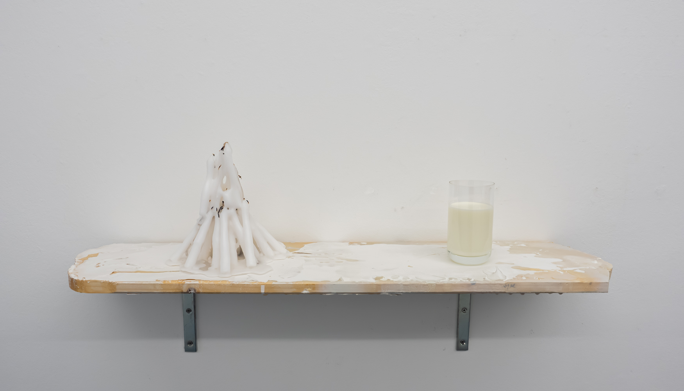
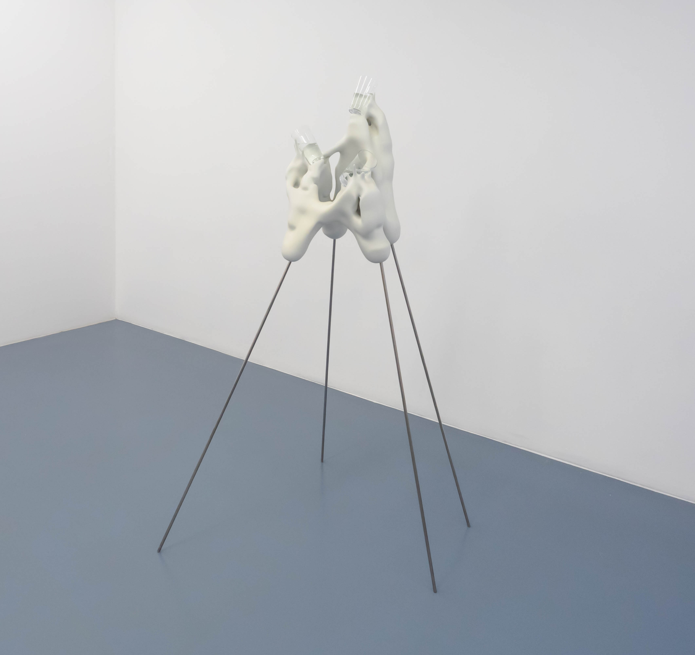
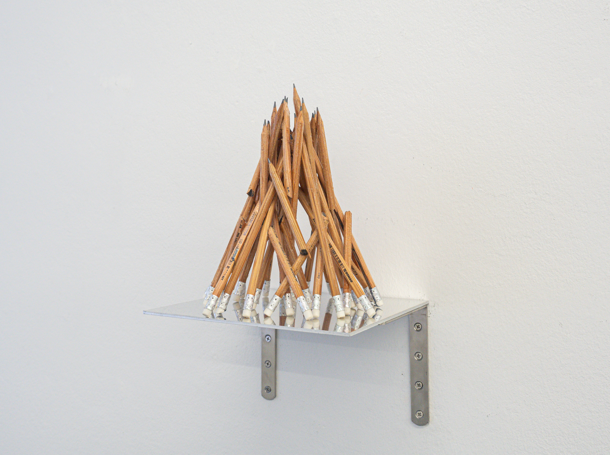
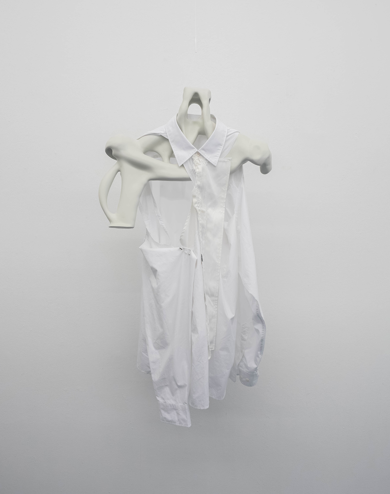
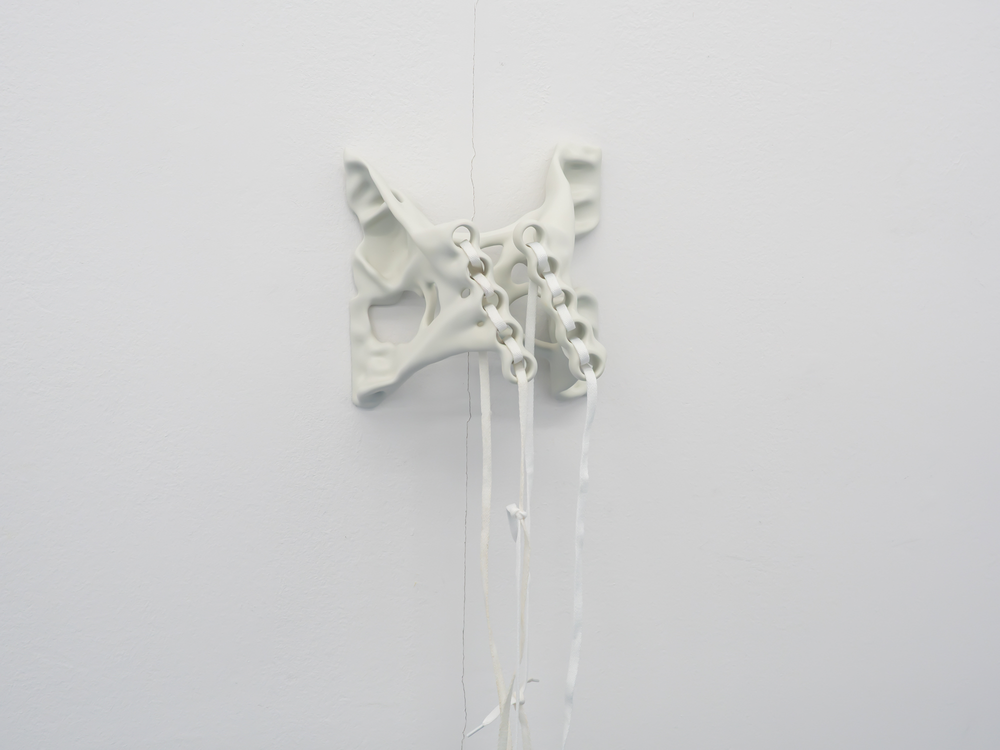
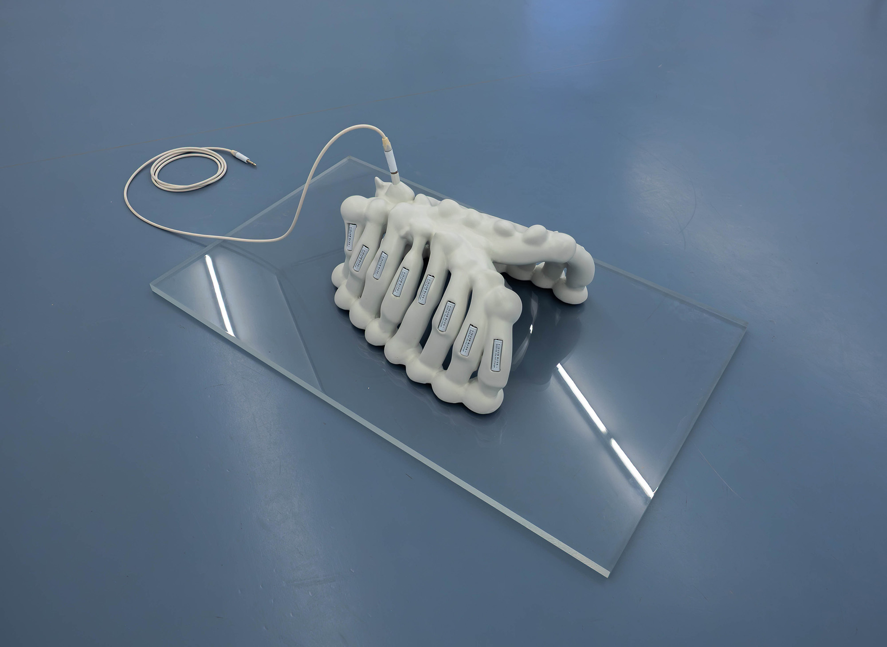
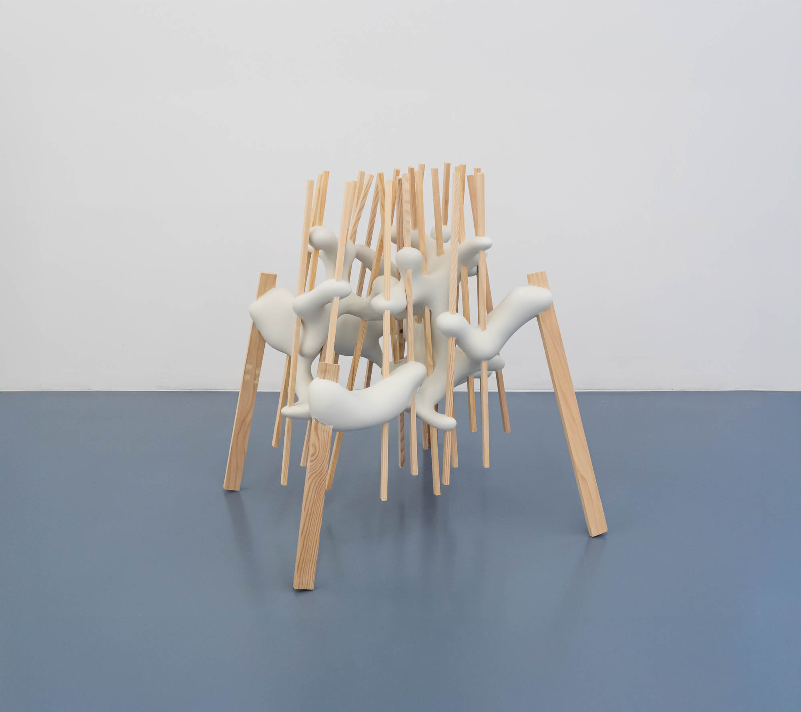

A Study of Support
2025
Sculpture
"A Study of Support" is a series of sculpture projects that explores form using the technique of topology optimization. This mathematical approach is often utilized in industrial design to determine the most efficient shape within a given space. By defining boundary conditions, such as which points are fixed and where forces are applied, an algorithm calculates the ideal topology to satisfy those requirements. The resulting organic forms possess unique morphological qualities that serve to support predefined objects. I found a deep association between these forms and the concept of the body itself, which is not limited to the human body but encompasses the bodies of all creatures. The actual placement or structure of a body is the result of a genetic drive to support its own existence, much like a tree that grows in a highly irregular way within a severe environment just to maintain its own weight. In that sense, the shape of a body is a manifestation of the struggle with external forces and also a fundamental desire: the effort to live and remain upright on its own. I have reinterpreted the body in this broader sense and presented the consequences of that exploration as these sculptural works.





